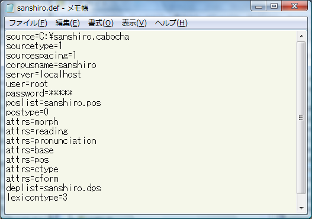
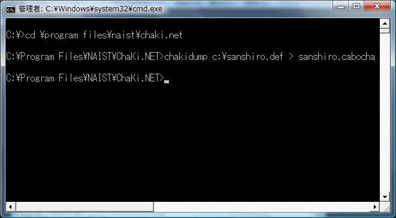
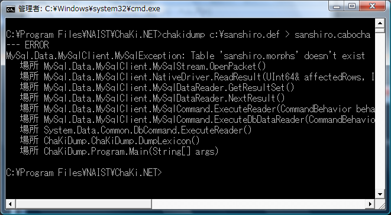

ChaKi Legacy版のデータベースをインポートするには、ChaKi.NET.exeと一緒に配布されるChaKiDump.exeコマンドを 使用します。このコマンドは、Legacy版の.defファイルを用いてMySQLのデータベースをオープンし、Cabocha形式を 独自に拡張した独自形式によってその内容を標準出力にダンプします。
ChaKi.NETは、この拡張形式を通常のCabochaファイルをインポートする場合と同じように読み込んで 新しいデータベースを作成することができます。
まず、変換したいコーパスと対応するLegacy版の.defファイルの場所を確認します。 ここでは仮に"c:\sanshiro.def"であったとします。このファイルの内容は例えば次のようなものです。 MySQLサーバに接続可能であることも確認してください。

この内容の中で重要なのは、corpusname, server, user, passwordです。
次に、スタートメニュー等よりWindowsのコマンドプロンプト(cmd.exe)を開いて、次のような コマンドを入力してください。（入力ファイルは、実際の.defファイルのフルパスに置き換えてください。）

エラーなくコマンドプロンプトに戻れば、出力ファイルができています。">"は、標準出力
（コンソール）への出力内容を右に指定したファイル（ここでは、"C:\Program Files\NAIST\ChaKi.NET\sanshiro.cabocha"）に書き出すためのリダイレクト記号です。
ここで指定した出力ファイルは、次のステップでインポート元ファイルとして使用します。
なお、出力先のファイルが既に存在する場合、強制的に上書きされますので、ご注意ください。
次に、生成されたCabochaファイルをChaKi.NETのCreate Corpus機能によりインポートします。 これ以降は通常のコーパス作成と同じとなりますので、そちらを参照してください。
※下のようなエラーが出た場合は、.defファイルをChaKi.NETのものと取り違えている可能性があります。 